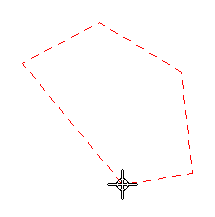
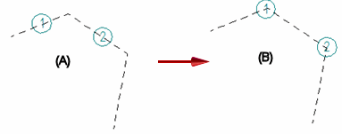

Annotation Alignment Shape command bar
Sets options for creating and modifying annotation alignment shapes.
- Properties
-
Accesses the Alignment Shape Properties dialog box.
- Closed
-
Draws a closed linear shape with a minimum of three sides, such as a triangle, polygon, or rectangle.

As you draw, if you touch existing annotations, they are collected by, and become attached to, the new shape. You also can drag an existing alignment shape onto an annotation to collect it.
This option is not available when modifying an alignment shape.
- Uniform
-
When selected, specifies uniform spacing of annotations along the alignment shape. When deselected, specifies non-uniform spacing.
Changing from non-uniform spacing (A) to uniform spacing (B) rearranges existing annotations.

Changing from uniform to non-uniform spacing has no effect.
Note:When non-uniform spacing is selected, you can use the Minimum spacing options on the General tab in the Alignment Shape Properties dialog box to define a minimum spacing value to prevent annotations from being positioned too closely.
- Drawing View
-
Links an existing drawing view to the alignment shape you created. This allows the alignment shape to move with the drawing view. If the scale of the linked drawing view changes, then the scale of the alignment shape changes along with it.
This option is not available when modifying an alignment shape.
- Order
-
Specifies the order in which item balloons are arranged on the drawing. This option is available when modifying an alignment shape that is linked to one drawing view and has item balloons attached to it.
You can use this option to rearrange item balloons so that they match the item numbers in a linked parts list.
- None
-
This is the default option.
- Clockwise
-
Specifies that item balloons are ordered clockwise around the drawing view.
The default starting position is the upper-left corner of the assembly drawing view. You can use the Start Balloon option to designate a different balloon as the start balloon for clockwise ordering.
- Counterclockwise
-
Specifies that item balloons are ordered counterclockwise around the drawing view.
The default starting position is the upper-left corner of the assembly drawing view. You can use the Start Balloon option to designate a different balloon as the start balloon for counterclockwise ordering.
- Start Balloon
-
Designates the start balloon in the item number sequence for clockwise or counterclockwise ordering of auto-balloons. The balloon order updates automatically after you select the starting balloon.
The Order and Start Balloon options are not available when either of the following options is used to generate an auto-ballooned parts list:
-
Use assembly generated item numbers
-
Renumber items/balloons according to sort order
How do I
Align annotations using the Annotation Alignment Shape commandManage annotations that are associated with an alignment shape
Learn more
Arranging annotations using alignment shapesModifying alignment shapes to rearrange annotations
Look up more details
Annotation Alignment Shape commandShow/Hide Annotation Alignment Shape command
Alignment Shape Properties dialog box
Alignment Shape Properties dialog box (General tab)
Alignment Shape Properties dialog box (Annotations tab)